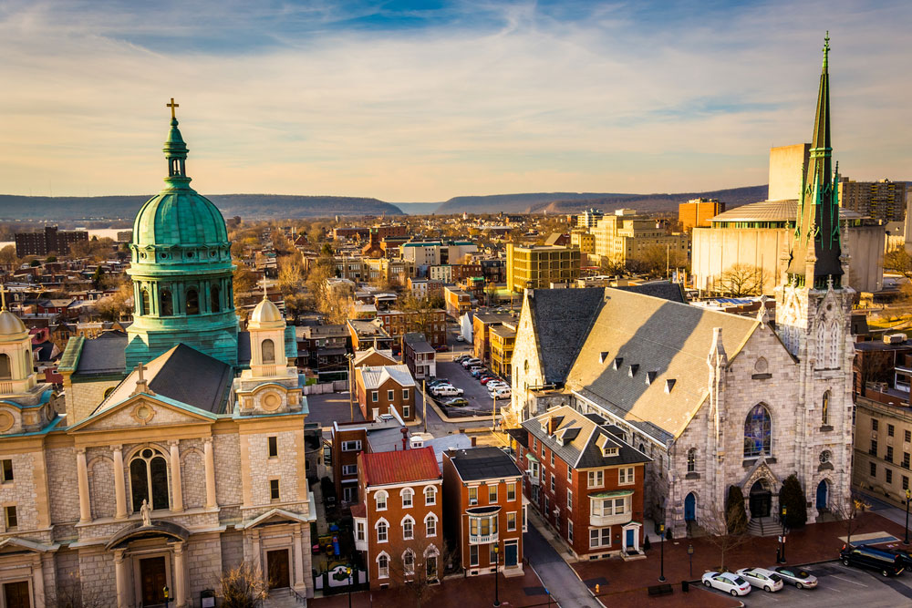

PENNSYLVANIA
Viaja al centro de Pensilvania para conocer su patrimonio de comunidades amish, la historia de la época de la independencia, los fabulosos parques y los pastizales ondulantes de la región.
El centro de Pensilvania cuenta con una gran variedad de atracciones históricas, culturales y naturales. Pensilvania solía ser un sitio clave para el Imperio Británico, por lo que actualmente hay muchas reliquias de la historia de la independencia. Visita los campos de batalla, relájate en las ciudades modernas y camina por los bellos sitios naturaleslos montes Apalaches cruzan el centro de Filadelfia. Camina durante un día en el Sendero de los Apalaches. Si quieres seguir explorando al aire libre, viaja al oeste para visitar Pennsylvania Wilds y el Parque Estatal Cherry Springs. En los pastizales del condado de Lancaster puedes conocer las tradiciones de las comunidades holandesas de Pensilvania. Aquí se encuentran algunos de los asentamientos amish más antiguos del país. En esta gran comunidad, las personas llevan un estilo de vida sencillo y cuidan su tierra con caballos y mulas.
Si quieres conocer la historia de la independencia, viaja a Gettysburg. El encanto y la gran historia se combinan en este pequeño pueblo, que puedes usar como base para un tour por todos los lugares de interés del Parque Militar Nacional de Gettysburg. Conoce la historia de la famosa Batalla de Gettysburg, que se llevó a cabo en 1863, y el discurso de Gettysburg, protagonizado por el presidente Abraham Lincoln.
Viaja en auto hacia Harrisburg, la capital del estado, y contempla el paisaje con algunas bodegas de vino y cervecerías artesanales. Párate en los escalones del Capitolio del Estado de Pensilvania, asiste a un espectáculo en el Teatro Hershey o conoce la historia militar, social y política de los Estados Unidos en el Museo Nacional de la Guerra Civil.
Asiste a una carrera en el Autódromo de Bedford, ubicado en Bedford, el cual ha estado en funcionamiento desde 1936. Aquí también se lleva a cabo la Feria del Condado de Bedford. Visita el Pueblo Antiguo de Bedford, donde puedes ver recreaciones militares y civiles, artesanías coloniales y exhibiciones.
El Aeropuerto Internacional de Filadelfia es un punto de acceso importante para la región del centro de Pensilvania. Si quieres una conexión más cercana, también hay varios aeropuertos regionales más pequeños. Disfruta un paseo en auto por esta parte del estado, donde las escenas agrícolas con carretas de caballos y graneros con paredes rojas generan un ambiente verdaderamente campestre.
